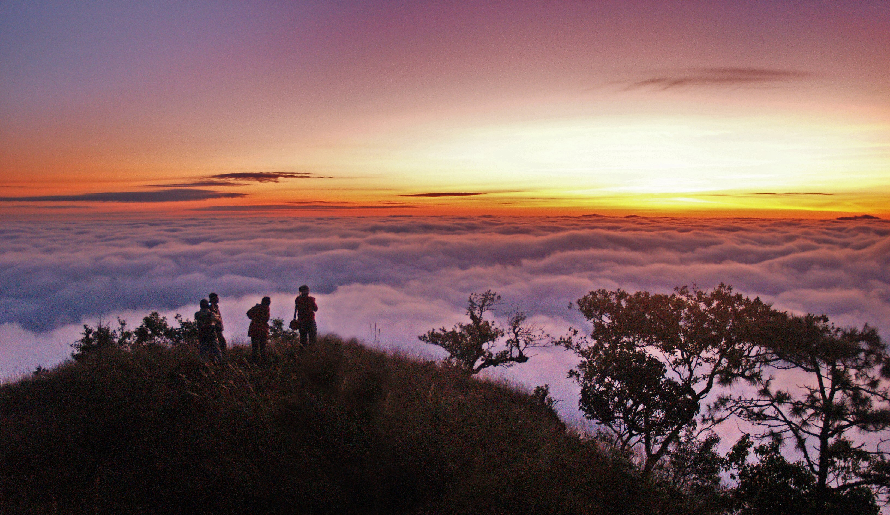
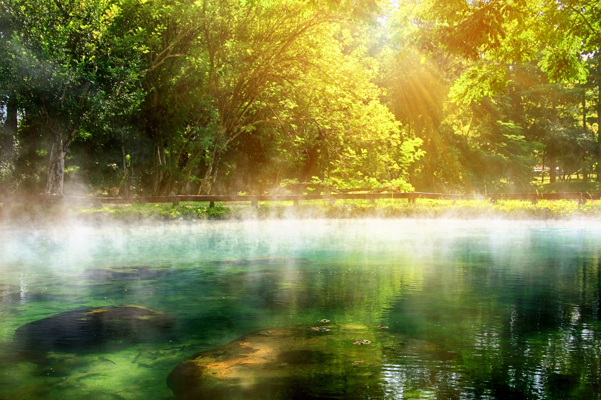

มรดกป่าไม้ประเภทป่าและโครงสร้างป่า จังหวัดเชียงรายมีป่าสงวน (National Reserved Forest) จำนวน 30 แห่ง ครอบคลุมพื้นที่ประมาณ 4,485,966 ไร่ ซึ่งคิดเป็นประมาณ 61.46% ของพื้นที่ทั้งหมดของจังหวัด เชียงรายมีป่าสงวนขนาดใหญ่เพื่ออนุรักษ์ทรัพยากรป่าไม้.มี “ป่าชุมชน” (Community Forest) หลายแห่ง โดยชุมชนในเขตเชียงรายร่วมกันดูแลป่าเพื่อประโยชน์ทางน้ำและเป็นแหล่งศึกษาเรียนรู้ กลุ่ม “ป่าศรีลานนา” (Sri Lanna Forest Group) — เป็นกลุ่มภูเขาสูงที่ทอดผ่านหลายจังหวัดรวมเชียงราย มีเทือกเขาและพื้นที่ป่าที่สำคัญ เช่นลุ่มน้ำกก, ปิง, แม่โขง ฯลฯ ตัวอย่างอุทยานในเชียงราย1. อุทยานแห่งชาติขุนแจ (Khun Chae National Park) - ตั้งอยู่ในเชียงราย (อำเภอ Wiang Pa Pao) พื้นที่ประมาณ 270 กม² (ประมาณ 168,750 ไร่) - ภูเขาสูงสุด: ดอย Lang Ka สูง ~ 2,031 เมตร - ป่าหลากหลาย: มีป่าไผ่, ป่า dipterocarp (ผลัดใบ), ป่าสน, ป่าเขียวชื้น (evergreen) ตามความสูงของภูเขา. - น้ำตก: มีน้ำตกหลายชั้น เช่น น้ำตกขุนแจ (6 ชั้น) และน้ำตก Mae Tho (7 ชั้น) ซึ่งเป็นจุดท่องเที่ยว. 2. อุทยานแห่งชาติลำน้ำกก (Lam Nam Kok National Park) - ตั้งอยู่ในอำเภอต่าง ๆ ของเชียงราย (Mueang, Mae Chan, Mae Lao, Mae Suai) พื้นที่กว้าง 634.87 กม² - เป็นพื้นที่ป่าที่สำคัญสำหรับระบบนิเวศลุ่มน้ำ “กก” — ป่าในอุทยานช่วยรักษาต้นน้ำ เป็นแหล่งน้ำและเป็นแหล่งท่องเที่ยว (น้ำตก ฯลฯ) - ยังเป็นจุดเชื่อมต่อทางนิเวศระหว่างภูเขาและที่ราบ ทำให้มีความหลากหลายทางชีวภาพสูง (ทั้งพืชและสัตว์) |